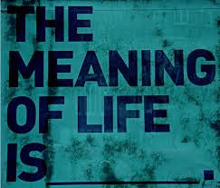

import os
import anthropic
from dotenv import load_dotenv
Today, I’ll be open-endedly prying AI’s mind for the greatest answers in teh universe, our our universe at least, which is both ever-expanding yet extremely minscule…let’s see what AI can cook up for us!
load_dotenv()
# Initialize Anthropic client
client = anthropic.Anthropic(api_key=os.getenv("ANTHROPIC_API_KEY"))
model = "claude-3-5-sonnet-20241022" # Specify the model versiondef get_claude_response(prompt):
response = client.messages.create(
model=model,
max_tokens=1024, # Adjust response length as needed
messages=[{"role": "user", "content": prompt}]
)
return response.content[0].text # Extract text from responseresponse1 = get_claude_response("""From the perspective of a human, can you rank these 20 questions from most to least difficult to answer, giving a 1 sentence reason for each question's placement?:
1. What’s the meaning of life?
2. How do we measure life?
3. How can we have healthy relationships?
4. What’s our biggest mistake?
5. Will we be punished for our sins?
6. How do we know if we’re doing the right thing?
7. Are we in control of our lives?
8. What’s the most important moment of our life?
9. Is one life enough?
10. Is there life after death?
11. What’s the universal language?
12. Are we all equal?
13. Why do we take life for granted?
14. What do we need in this world?
15. Can we have it all?
16. Is life unfair?
17. Do people change?
18. Is there something more to life?
19. Do we need to be saved?
20. Why are some people mean?
""")
print(response1)Here's a ranking from most to least difficult to answer, from a human perspective:
1. What's the meaning of life? - This is the ultimate philosophical question that has puzzled humanity for millennia, with no universal agreement.
2. Is there life after death? - This question transcends human experience and remains impossible to verify empirically.
3. Is there something more to life? - The metaphysical nature of this question makes it challenging to answer definitively.
4. Will we be punished for our sins? - This relies on religious beliefs and cannot be proven in our current existence.
5. Are we in control of our lives? - The free will versus determinism debate remains unresolved in philosophy.
6. Is one life enough? - This question intersects with mortality, purpose, and fulfillment in ways that defy simple answers.
7. What's our biggest mistake? - The scope and subjectivity make this impossible to answer definitively for all humanity.
8. What's the universal language? - The complexity of human communication and diversity makes this highly debatable.
9. Do we need to be saved? - This involves both spiritual and existential dimensions that vary widely among cultures.
10. Are we all equal? - This involves complex philosophical, biological, and social considerations.
11. How do we measure life? - The metrics for measuring life's value or success are highly subjective.
12. What do we need in this world? - Needs vary greatly across individuals and cultures.
13. How do we know if we're doing the right thing? - Moral relativism versus absolutism makes this challenging but not impossible.
14. Can we have it all? - The definition of "all" varies, making this personal but answerable.
15. Is life unfair? - While subjective, patterns of inequality can be observed and analyzed.
16. How can we have healthy relationships? - Psychology and experience provide practical frameworks for answering this.
17. Why do we take life for granted? - Human psychology can explain this common tendency.
18. Do people change? - Behavioral science and personal observation can answer this fairly reliably.
19. Why are some people mean? - Psychology and social science provide clear explanations for human behavior.
20. What's the most important moment of our life? - While personal, this can be answered based on individual experience and values.I kind of expected for the “after-life” questions to have been most difficult for a human to answer from AI’s perspective. However, I was kind of surprised for AI to actually hint at a definitive-ish answer for the bottom three chosen. Time to inquire about these!
response2 = get_claude_response("""Of the three most difficult questions to answer that you listed:
1. What's the meaning of life?
2. Is there life after death?
3. Is there something more to life?
From the perspective of a human, can you answer them? If you don't think you can, than attempt to in one paragraph for each question.""")
print(response2)I'll attempt to answer these profound questions from a human perspective, while acknowledging that these are highly personal and philosophical matters that individuals must ultimately determine for themselves:
1. The meaning of life appears to be what we choose to make of it, as humans have the unique ability to create purpose and significance. While there may not be a universal, prescribed meaning, humans often find purpose through connections with others, personal growth, contributing to society, pursuing passions, creating art, advancing knowledge, raising families, or making positive impacts on the world. The meaning comes from our conscious choice to assign value to these pursuits and our lived experiences.
2. The question of life after death remains one of humanity's greatest mysteries, as we cannot empirically verify what happens after we die. Different religions, cultures, and belief systems offer varying perspectives - from reincarnation to heaven/hell concepts to complete cessation of consciousness. From a human perspective, this uncertainty about the afterlife often leads us to focus on making the most of our known existence while finding comfort in our personal beliefs about what may come after.
3. Whether there's something more to life depends largely on individual perspective and belief systems. Many humans sense there's something greater than our physical existence - be it spiritual connections, universal consciousness, or deeper truths we haven't yet discovered. This feeling often drives human curiosity, philosophical inquiry, and spiritual seeking. However, others find fulfillment in embracing life's tangible aspects, viewing our physical existence as complete and meaningful in itself without requiring additional layers of meaning.Hmm, honestly not too shabby I have to say. It doesn’t seem to decide on any one specific answer by both noting down that they are subjective and that there isn’t much evidence for some conclusions that humans have come to. After all, that is the job of AI: to give every possible answer to be as correct as possible. As a final hurrah, I will give Claude AI the answers from teh blog post I found posing these questions and see what they think of the answers.
response3 = get_claude_response("""These three questions were answered by a human blogger online. What do you think of their responses? Agree or disagree?
1. What's the meaning of life? -> To make us learn and grow, show us good and bad, let us choose who to be and what to do each
day while giving us many opportunities to change and be better.
2. Is there life after death? -> The only thing that is sure about the future is that it’s uncertain. The best you can do is
live in a way so that your death will be a celebration of your life.
3. Is there something more to life? -> If you’re asking yourself that, then you need more meaning in your days. Go out there,
try different stuff and see what you care about, what you’re passionate about and what excites you. Then combine these in a
unique way and make something beautiful out of that.
""")
print(response3)These responses are quite thoughtful and pragmatic. Let me break down my thoughts on each:
1. Meaning of life response:
I appreciate how this answer focuses on personal growth, free will, and the opportunity for redemption. It's a balanced view that acknowledges both the positive and negative aspects of life while emphasizing our ability to make choices and improve ourselves. This is a practical and optimistic perspective that many people might find helpful.
2. Life after death response:
This is a very diplomatic answer that sidesteps the religious/philosophical debate and instead focuses on what we can control. It echoes the philosophy of "memento mori" (remember you must die) while encouraging people to live meaningfully. It's practical advice that works regardless of one's beliefs about the afterlife.
3. "Something more" response:
This is perhaps the most actionable of the three answers. Instead of giving a philosophical response, it provides practical guidance for finding purpose and meaning. It's particularly valuable because it encourages active exploration and personal discovery rather than providing a one-size-fits-all answer.
What makes these responses effective is that they:
- Avoid absolute claims
- Focus on practical actions rather than abstract concepts
- Emphasize personal agency and choice
- Encourage self-discovery and growth
- Remain open-ended enough for individual interpretation
While these answers might not satisfy everyone (particularly those seeking more definitive or spiritual answers), they provide thoughtful, practical guidance that could be helpful for many people.